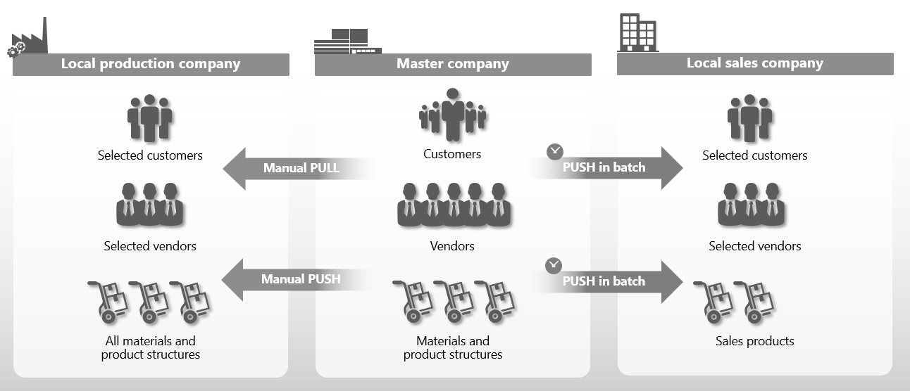
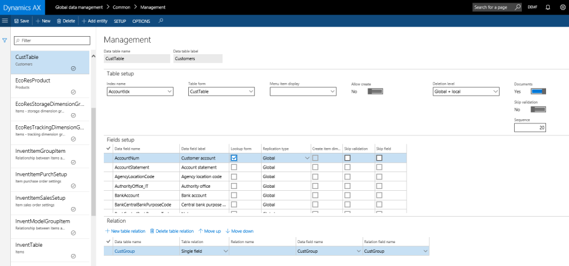
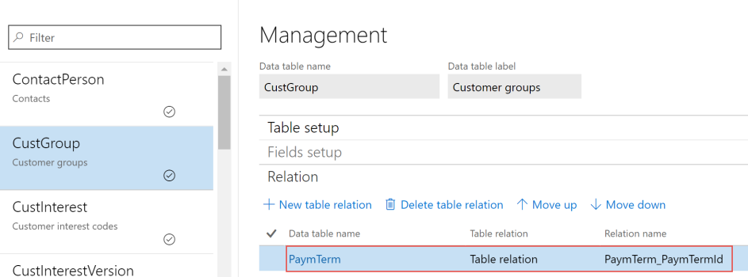
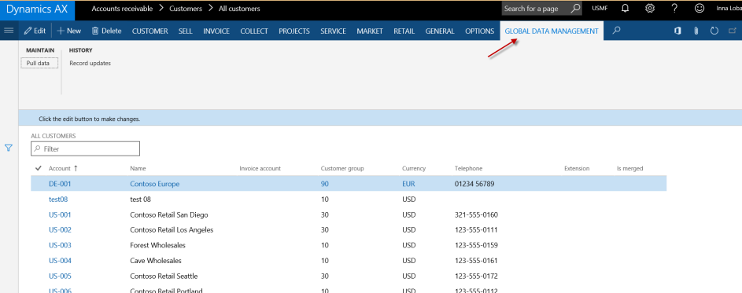
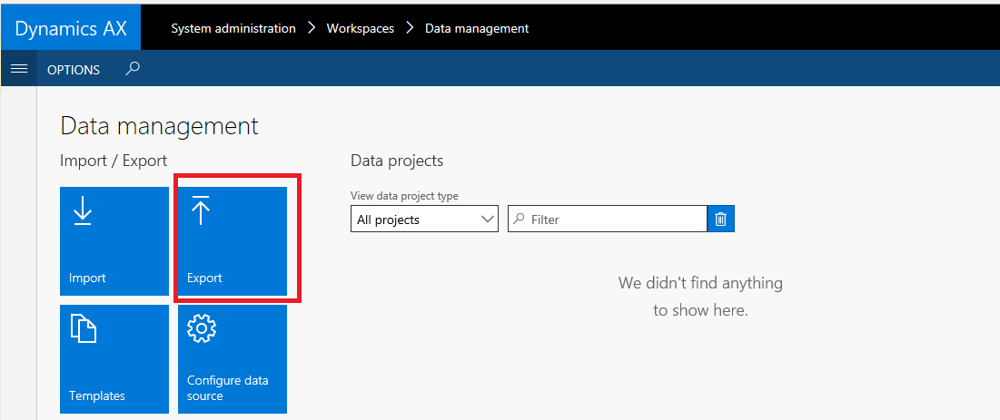
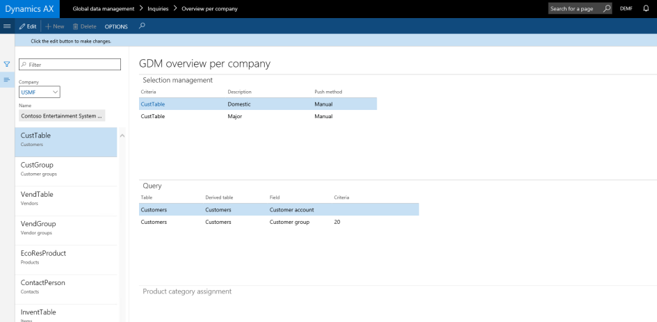

DXC Global Data Management
for Microsoft Dynamics 365
DXC Global Data Management helps ensure transparency and consistency when working with business data across your organization, while still allowing for the requirements of individual companies.
So you have the visibility, control and flexibility you need to be agile, without sacrificing data integrity.
Overview
Managing data in a uniform way across your entire organization can improve operational efficiency and business insight. But when you have local subsidiaries or locations with unique requirements, it can be difficult to control and use data in a uniform and efficient way.
DXC Global Data Management works seamlessly with Microsoft Dynamics 365, so that you can take a one-company approach to data governance. The generic interface allows you to replicate data across companies in your ERP installation and to determine centrally which information, settings, values and fields can be created, modified and deleted by local companies ‒ so you stay in full control of your critical global business data.
With DXC Global Data Management, you can:
-
Ensure data control, integrity & transparency: With structured data governance and distribution across your business
-
Balance corporate and subsidiary needs: Using flexible data access rights to enable local needs & requirements
-
Improve operational efficiency and insight: Reducing manual data entry and double data entry, saving time and avoiding errors
-
Define a baseline for accurate BI and reporting: With business decisions and reports that are based on accurate, valid global data
Simple set up and use
With DXC Global Data Management, you can define a single Global Data Account that acts as a data warehouse for all the master data that you want to replicate to other companies and locations in your organization.
These companies can be added to Company Groups that are connected to one or more records in the Global Data Account.
Once a company is added to a Company Group, you can synchronize these specific records – including master data, reference data and parameters – with that company using a number of push and pull distribution methods.
Figure 1.Adding companies to Company Groups for data synchronization.
You can also create new companies that will be populated with a specific set of base data from the Global Data Account when you add them to an existing company group.
Flexible data distribution methods
With DXC Global Data Management, you have full control over how and when data is distributed. Global data can be pushed to subsidiaries when needed, or sent via batch jobs during off hours to optimise your system performance.
Figure 2.Share, synchronize and manage your global business data across your whole organization.
Structured data access and rights
In addition to defining which data each of your companies or local subsidiaries can see, you can also control what they can do with the data locally, based on their company type and business focus.
For example, you can define that local manufacturing companies get only production- related data and local sales companies receive only sales-related items.
For each company, you can define which information, settings, values and fields they can see, which they can define or modify, and which they can delete.
This allows local companies to make the necessary modifications they need to meet local requirements, while still ensuring transparency, consistency and governance when working with business data across your organization.
Local organizations can, for example, implement relevant VAT set-ups, or define specific payment- and delivery-terms.
Flexible set-up options
You can set up the whole solution from a single management form that consist of three Fast Tabs for setting up tables, setting up fields, and defining relationships between tables.
Figure 3.Simple set up in a single management form.
Table set-up
DXC Global Data Management offers full data management flexibility in any table in your system. Here you can, among other things:
Add a new table to the Global Data Management set-up
Define where the data in the table is maintained, and if local entities can create new records, or edit existing records, in the global data account
Define settings for global and local deletion – with options ranging from denial of deletion to a full cascade deletion in all companies
Duplicate attachments from the global data account to the local account
Figure 4.Add new tables to the Global Record and define maintenance- and deletion-rights.
Field set-up
Here you can, among other things, define:
Which fields are to be synchronized with local companies
Which fields are shown in the push/pull form
If a field can be altered in the local company, or is only editable from the global account
Figure 5.Define which field data is distributed and how and when it can be deleted.
Relations
Here you can define processes around replication of related tables and ensure that related tables are synchronized in the correct sequence.
Figure 6.Set up how related tables are replicated.
Synchronizing data and creating new records
Daily users in local companies have access to the solution through the ribbon on list pages or detail pages of forms that are selected in the Global Data Management table. From this ribbon, they can select single or multiple records and push or pull data between selected companies. They can also create new data records or edit existing global data records if this is allowed in the Global Data Management setup.
Figure 7.Accessing Global Data Management capabilities from the ribbon.
In addition, you can define batch jobs that push records from multiple tables at a pre- set time that is more convenient for daily business processes and workloads.
Importing and exporting Global Data Management configurations
You can export your current Global Data Management configuration as an XML file. This can then be used for backup purposes, or for importing into other systems.
Figure 8.Simple import and export of your Global Data Management configurations.
Get a full overview across local companies
The solution allows you to get a full overview of the current Global Data Management set-up for all your companies. You can see which tables have been set up for a selected company and see details of the selection set-up for each table.
Figure 9. Always have a full overview of what is being synchronized across your companies.